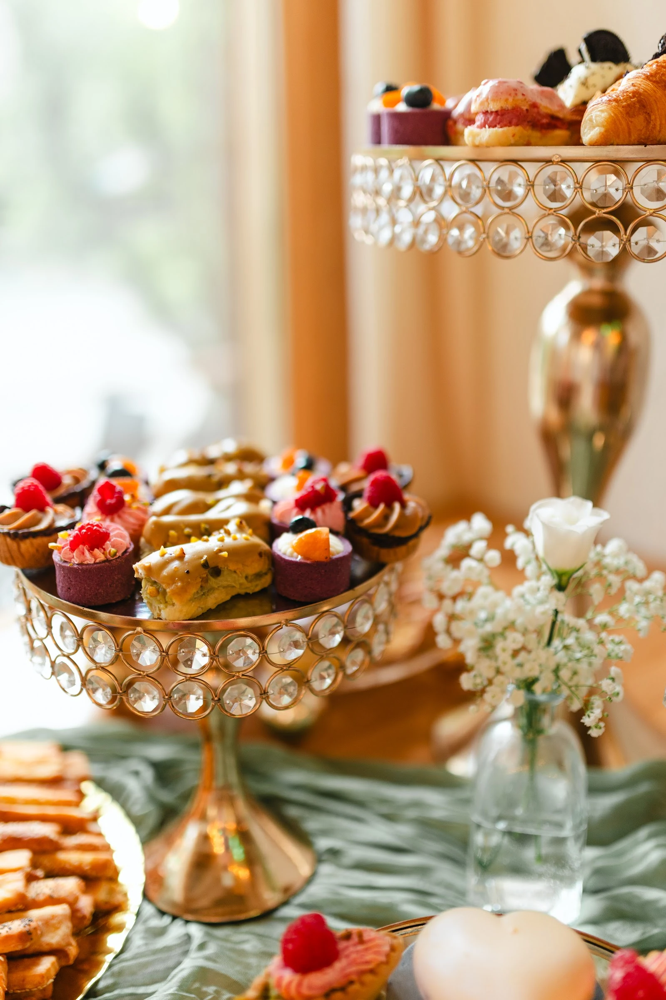
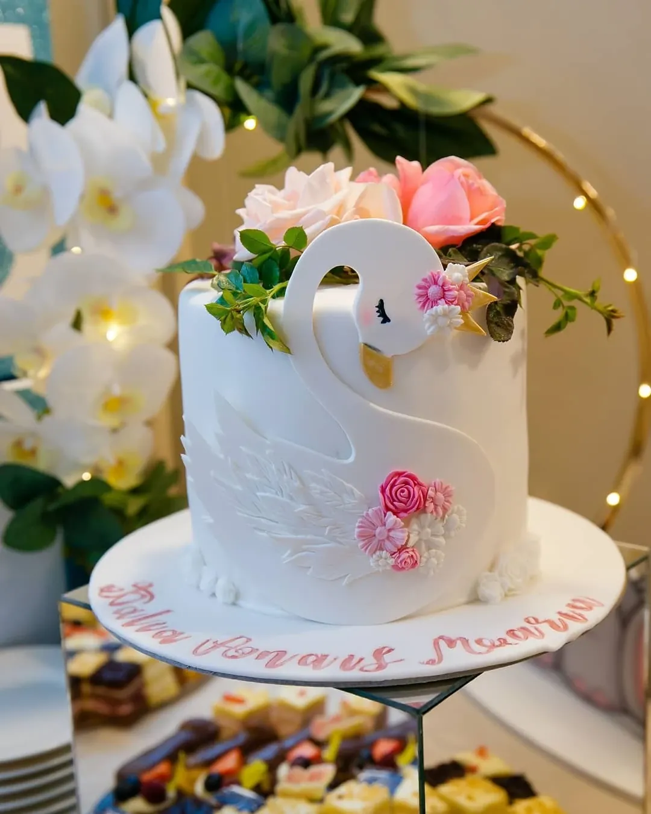
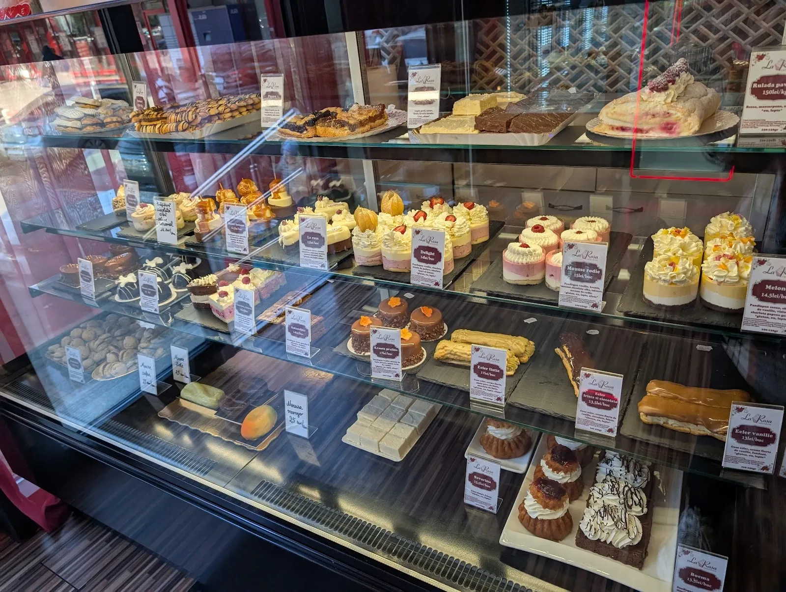
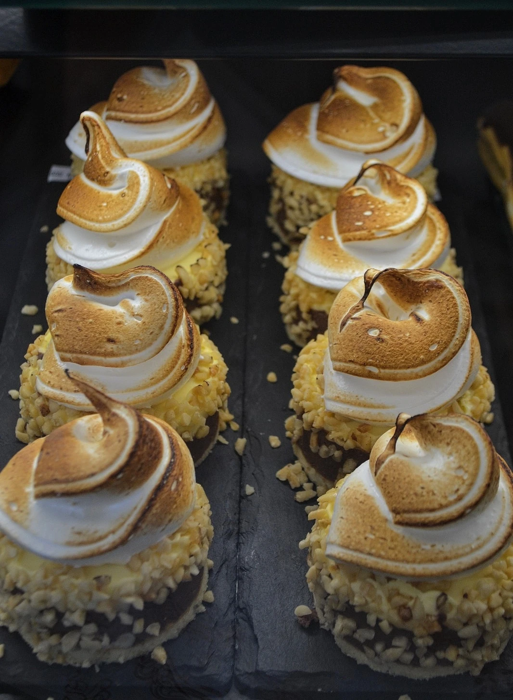
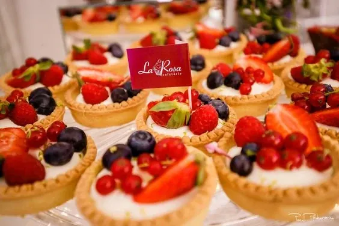
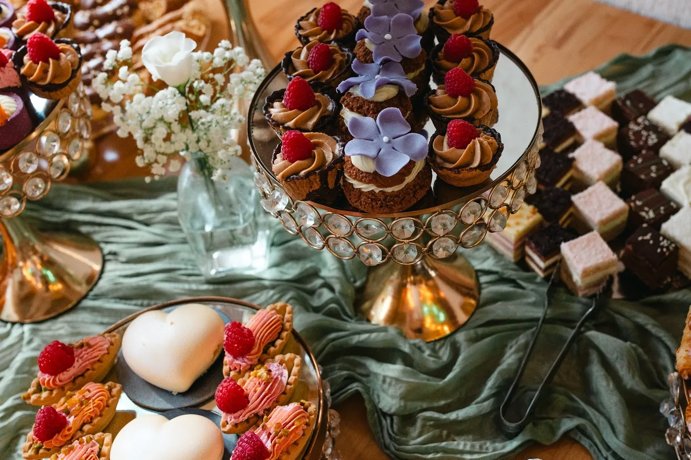
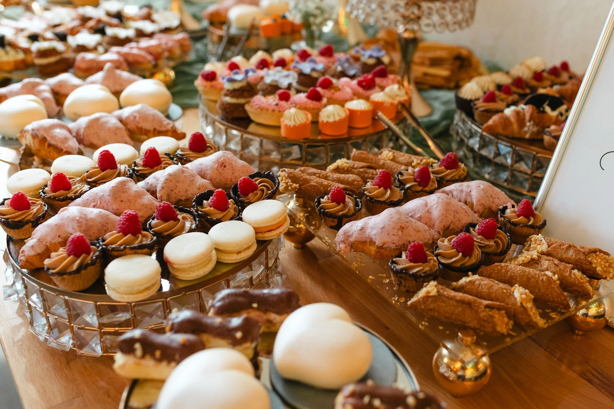
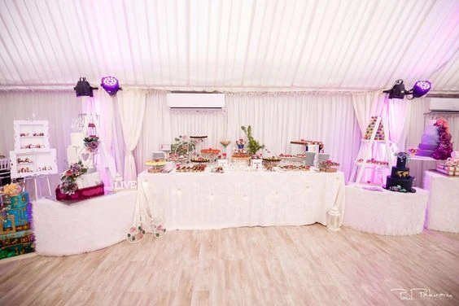

{{Cofetărie · Strada Bacinschi 3, Iași|Patisserie · Strada Bacinschi 3, Iași|Pastelaria · Strada Bacinschi 3, Iași}}
{{Exact cum l-ai visat,|Exactly as you pictured it,|Exatamente como o imaginou,}}{{până la ultima linguriță.|down to the last spoonful.|até à última colher.}}
{{Torturi aniversare cu mesajul tău, candy bar pentru nuntă și botez, tarte cu fructe și prăjiturile care arată ca un mango adevărat.|Birthday cakes with your own message, candy bars for weddings and christenings, fruit tarts and the pastries that look just like a real mango.|Bolos de aniversário com a sua mensagem, candy bar para casamentos e batizados, tartes de fruta e os bolinhos que parecem uma manga a sério.}}

{{Vitrina de azi|Today’s counter|A vitrine de hoje}}
{{Ce vezi aici e ce găsești la tejghea|What you see here is what’s on the counter|O que vê aqui é o que encontra ao balcão}}
{{Fotografii din cofetărie și de la evenimentele La Rosa: tarte cu fructe, bezea rumenită, prăjituri mici și torturi cu flori de zahăr.|Photos from the shop and from La Rosa events: fruit tarts, toasted meringue, petits fours and cakes with sugar flowers.|Fotografias da pastelaria e dos eventos La Rosa: tartes de fruta, merengue tostado, bolinhos e bolos com flores de açúcar.}}


{{Prăjiturile-fruct|The fruit pastries|Os bolinhos-fruta}}
{{Cele „faimoase”, cum le spun clienții: arată și au gust de fructul adevărat.|The “famous” ones, as customers call them: they look and taste like the real fruit.|Os «famosos», como lhes chamam os clientes: têm o aspeto e o sabor da fruta verdadeira.}}
- mango
- {{fistic|pistachio|pistáchio}}
- {{boabă de cafea|coffee bean|grão de café}}


{{Nunți · botezuri · aniversări|Weddings · christenings · birthdays|Casamentos · batizados · aniversários}}
{{Candy bar-ul și tortul,|The candy bar and the cake,|O candy bar e o bolo,}} {{dintr-o singură mână.|from one pair of hands.|feitos pelas mesmas mãos.}}
{{Platouri aurii cu cristale, catifea verde, flori albe și zeci de prăjituri mici: eclere, macarons, tarte, mousse în formă de inimă. Tortul vine de la aceeași cofetărie, ca totul să se potrivească.|Gold crystal stands, green velvet, white flowers and dozens of petits fours: éclairs, macarons, tarts, heart-shaped mousses. The cake comes from the same patisserie, so everything matches.|Pratos dourados com cristais, veludo verde, flores brancas e dezenas de bolinhos: éclairs, macarons, tartes, mousses em forma de coração. O bolo vem da mesma pastelaria, para que tudo combine.}}
{{O mireasă care a luat de aici candy bar-ul și tortul de nuntă spune că a fost „super mulțumită”: gust, prospețime și o colaborare excelentă de la prima discuție.|A bride who got her candy bar and wedding cake here says she was “super happy”: taste, freshness and great teamwork from the first conversation.|Uma noiva que encomendou aqui o candy bar e o bolo de casamento diz que ficou «super satisfeita»: sabor, frescura e uma colaboração excelente desde a primeira conversa.}}{{Madalina, recenzie Google|Madalina, Google review|Madalina, avaliação Google}}
- {{Spui data, locația și câți invitați sunt; cofetăria propune ce încape pe masă.|Tell them the date, venue and guest count; the shop suggests what fits on the table.|Diga a data, o local e quantos convidados; a pastelaria propõe o que cabe na mesa.}}
- {{Prețul pe invitat și decorul inclus: de confirmat|Price per guest and decor included: to be confirmed|Preço por convidado e decoração incluída: a confirmar}}



{{Comandă tort|Order a cake|Encomendar bolo}}
{{Scrie mesajul. Îl vezi pe tort.|Write the message. See it on the cake.|Escreva a mensagem. Veja-a no bolo.}}
{{Alegi ocazia, câte persoane, ziua și ce să scrie. Comanda pleacă gata scrisă pe WhatsApp sau SMS, iar cofetăria îți confirmă gramajul și prețul.|Pick the occasion, how many people, the day and what it should say. The order goes out ready-written by WhatsApp or SMS, and the shop confirms weight and price.|Escolha a ocasião, quantas pessoas, o dia e o que deve dizer. A encomenda segue já escrita por WhatsApp ou SMS, e a pastelaria confirma o peso e o preço.}}
{{Ce spun clienții|What customers say|O que dizem os clientes}}
{{Prăjiturile în formă și cu gust de fructe: a ales mango și i s-a părut interesant; mai sunt fistic și boabă de cafea. Produse proaspete, prețuri ok.|The fruit-shaped, fruit-flavoured pastries: she chose mango and found it intriguing; there’s also pistachio and coffee bean. Fresh, fair prices.|Os bolinhos com forma e sabor de fruta: escolheu manga e achou interessante; há também pistáchio e grão de café. Frescos, preços justos.}}
{{Candy bar și tort de nuntă: calitate, gust, prospețime și o colaborare excelentă cu echipa cofetăriei.|Candy bar and wedding cake: quality, taste, freshness and great teamwork with the shop.|Candy bar e bolo de casamento: qualidade, sabor, frescura e uma colaboração excelente com a equipa.}}
{{Tortul a arătat exact cum și l-au dorit, iar fetița, care de obicei nu mănâncă tort, l-a terminat până la ultima linguriță.|The cake looked exactly as they wanted, and her little girl, who usually skips cake, ate it to the last spoonful.|O bolo ficou exatamente como queriam, e a filha, que normalmente não come bolo, comeu-o até à última colher.}}
{{Vizită|Visit|Visita}}
{{Strada Bacinschi 3|Strada Bacinschi 3|Strada Bacinschi 3}}
- Strada Bacinschi 3, 700133 Iași
- 0758 477 797
{{Strada Bacinschi 3, Iași|Strada Bacinschi 3, Iași|Strada Bacinschi 3, Iași}}
{{Deschide în Google Maps|Open in Google Maps|Abrir no Google Maps}}